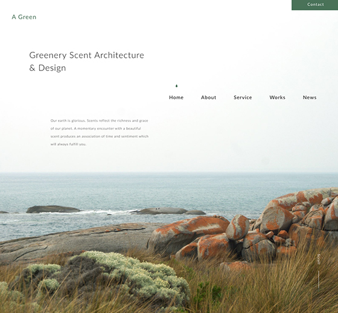
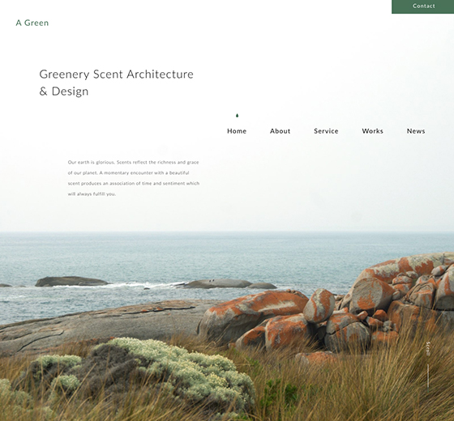

Service
ディレクション

お客様の要望をヒアリングし、現状の問題点を洗い出し、効果的なプランを作成いたします。制作ではデザインに入る前の事前の準備が特に重要になります。何が必要で何が必要でないのかを判断し、費用対効果の高いWebサイトを作るための土台を作ります。
デザイン

ヒアリングに基づいたプランに沿って、デザインを作成いたします。人の使うものであることを常に意識して、使う人が迷わない、目的を達成できるデザインを心がけています。インターフェースの重要性が増す中でデザインの役割を理解し、そのプランに最適な提案をさせていただきます。
コーディング

デザインの意図を理解し、動きや効果を適切に使用することでWebサイトの仕上がりは大きく変わります。スマートフォンサイト、ワードプレスを使用した更新性の高いサイト、Javascriptを使用した動きのあるサイトなど、様々なサイトのコーディングを行っております。
Works


 
